-
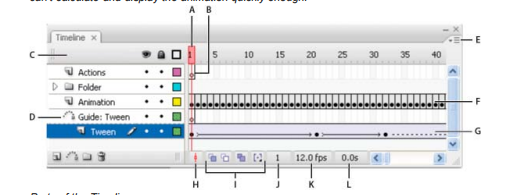
Timeline
The Timeline organizes and controls a document’s content over time in layers and frames. Like films, Flash Professional documents divide lengths of time into frames. Layers are like multiple film strips stacked on top of one another, each containing a different image that appears on the Stage. The major components of the Timeline are layers, frames, and the playhead. Layers in a document are listed in a column on the left side of the Timeline. Frames contained in each layer appear in a row to the right of the layer name. The Timeline header at the top of the Timeline indicates frame numbers. The playhead indicates the current frame displayed on the Stage. As a document plays, the playhead moves from left to right through the Timeline. The Timeline status displayed at the bottom of the Timeline indicates the selected frame number, the current frame rate, and the elapsed time to the current frame.
-
Selection Tool
Selection tool helps to select and modify the object shape. We can move any object which we have imported and drawn. We can delete the any part of any formatted picture but remember the picture should be break (To make break picture, press Ctrl + B key).
Subselection Tool
When we need modification to make different shape of the drown graphic in the document, we need a tool that is Subselection tool. It highlight the anchor point of the graphic by click on that to arrange point and get different shape as required.
-
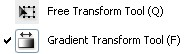
Free Transform tool
Free Transform tool is very important tool, this tool helps us to scale, reflect of the picture and we can rotate the object from the particular point. We can also skew of object as per our requirement.
Gradient Transform Tool
With the help of this tool you can scale and rotate of the Gradient. When you fill the Gradient on object. Select the Gradient Transform tool or pres F. As you click on Gradient Transform tool a bounding box will appear on the objects. Then you can work this bounding box Ex. Moving the gradient, move the focal point. (focal point applicable only Radial gradient.), increase and decrease of gradient, rotate the gradient as required.
-
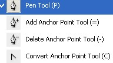
Pen Tool
Pen tool used to draw graphics by the anchor points and create line path in the document.
Add Anchor Point
We can add the more anchor point on the path and any graphic drawn by any tool by clicking on the path.
Delete Anchor Point
We can delete the anchor point on the same way by Clicking on the Anchor Points
Convert Anchor Point
We can modify the path with the help of this tool.
-
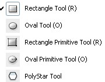
Rectangle Tool
This section has different type of shape tool to draw shape on the document like Rectangle, Oval, Rectangle Primitive, Oval primitive and polyStar shapes. You can also modify the tool property to get different type of shapes.
-
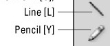
Line Tool
With the help of line tool we can also make the curve path and draw straight line. To make curve graphic we should draw a straight line then make curve by the help of Subselection tool.
Pencil Tool
This is a freehand tool that's used to drawing. when you click on the pencil tool more option will appear bottom of the tool pallet. you can create those shapes also.
-
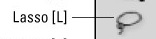
Lasso Tool
Lasso tool is a free hand selection tool. you can use this tool to select the object as you required and delete. when you select lasso option one magic wand tool and magic wand setting also appear down of the tool pallet, you can change the setting of this tool.
-
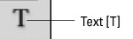
Text Tool
Select the text tool to type text on the document, click on the document with selected text tool a text area will appeared on the document, write the text on the box. You can scale the text area by scaling and more options will appear on the properties panel.
-
Brush Tool
It's also a freehand tool and used to crate drawing and lines in the document. The different mode of the tool are also available in the flash to get different brush effect, select brush tool some more option will appear on the bottom of the toolbar make setting and apply on.
-
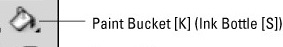
Ink Bottle
This tool is used to change the color of stroke color and other options.
Paint Bucket
The paint bucket helps us to fill selected color in the selected area and graphic, choose any color from the color pallate and fill by the paint bucket tool.
-
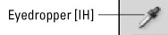
Eye Dropper Tool
Eye Dropper tool helps to pick any color from the picture and graphic, As you want to fill a color that is not in the color pallate, open colored picture and pick color by eye dropper tool and fill anywhere in the document as required.
-
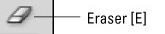
Eraser Tool
This is a eraser tool we can erase the object and unwanted area in the document by five different way, the list is given below.
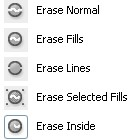 -
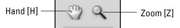
Hand Tool
With the help of hand tool, in the zoom mode of the document it is used to move document on any side or just hold down the space bar and move file with the help of the mouse.
-
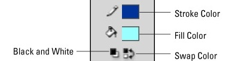
Stroke color
When we draw any graphic by the help of any tool, the stroke automatically appear with the graphic with same graphic color. If we want to draw graphic with different stroke color, select stroke color before drawing.
Fill color
First choose foreground color as you want to fill in the graphic then draw graphic on the document, it can also change after the drawing but the tool is given in the toolbar so make first color setting.